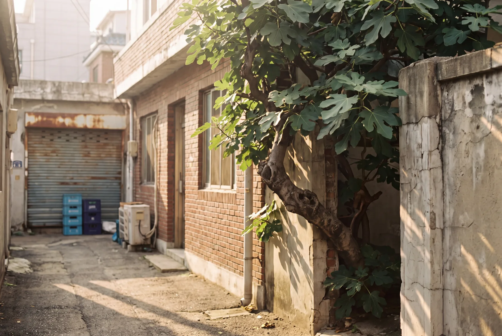
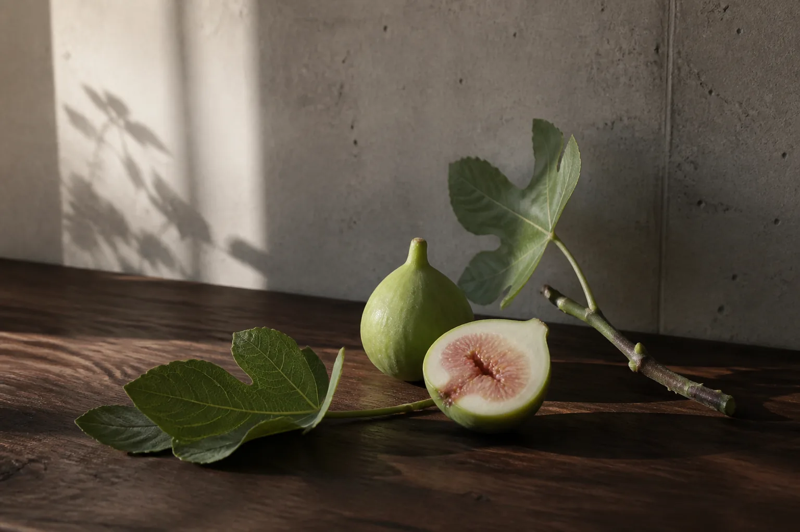
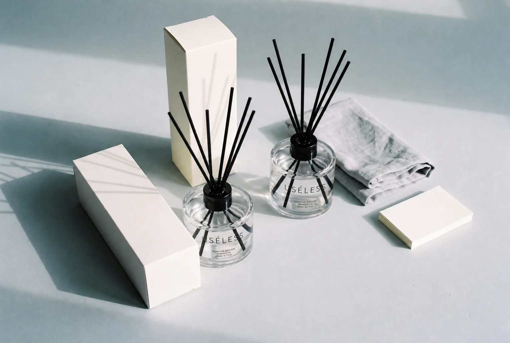
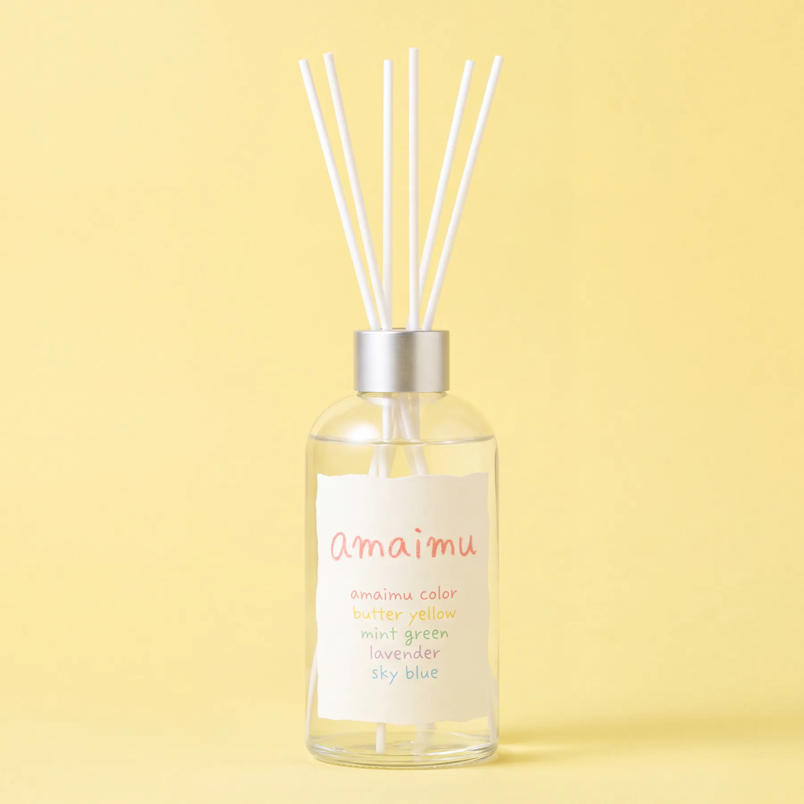

AT A GLANCE / 3 POINTS
고르기 전에, 세 가지만.
여행이 끝난 뒤에도
곁에 남는 서울
함께 걷던 골목, 우연히 들어간 카페,
오래 기억하고 싶은 오후의 공기.
성수 무화과는 그 장면을 집에서도 떠올리고,
좋아하는 사람에게 이야기와 함께 건네고 싶은 향입니다.

서울의 한 장면을
유리병에 담아갑니다
가장 사소하지만 낭만적인 순간을 향으로 녹였습니다.
유슬리스 서울의
첫 번째 이야기, 성수동
추억과 가장 가까운 오감인
향이라는 형태로

첫 향, 성수 무화과
막 가른 초록 무화과의 과육.
그 뒤로 겹치는 잎과 나무의 온도.
성수에서 오래 남은 한 장면을 첫 향으로 만들었습니다.
성수 무화과
SEONGSU FIG · 리드 디퓨저 200ml
푸르름을 간직한 무화과를
따뜻한 우드향이 감싸는, 우디피그
늦은 오후의 성수, 콘크리트 사이로 햇빛이 들어오고,
카페 앞 나무의 무화과에서 나는 풀향 섞인 달짝지근함
무화과의 푸른 달콤함에 소량의 자두
편백과 사이프러스의 맑고 깨끗한 숲 공기
차분하고 고급스럽게 남는 클린 우디 잔향
LOOK CLOSER / USÉLESS
향을 담는 형태도,
곁에 두고 싶은 이유.

낮고 넓은 곡면과 간결한 레터링. 책과 작은 오브제 옆에 놓인 모습을 떠올려보세요.

리드의 가느다란 선과 빛이 맺히는 유리. 가까이서 볼수록 다른 질감이 드러납니다.
제품 구성과 판매 일정은 출시 시 안내합니다.
이런 분께
- 추억을 향기의 형태로 간직하거나 선물하고 싶은 분
- 집이나 카페에 단정한 유리 오브제로 취향을 더하고 싶은 분
- 공간의 냄새와 분위기를 고급스럽게 바꾸고 싶은 분
- 마냥 달기보다 은은하고 자연스러운 향을 원하시는 분
문을 열자마자 확 퍼지는 강한 향을 찾으신다면 맞지 않습니다.
세운 채로 캡을 엽니다
기울이면 흐릅니다. 스토퍼를 빼고 캡은 따로 보관하세요.
리드는 5개 정도
한 번에 다 꽂으면 향은 세지고 기간은 짧아집니다.
2주-1개월
티슈로 잡고 반대로 꽂으면 향이 다시 올라옵니다.
WHAT'S IN THE BOX
상자 안에 담을 것들을
한눈에.

리드 길이는 25cm입니다. 상세 구성과 선물 포장은 출시 시 안내합니다.

기억을 간직하고, 취향을 선물하는 방법
서울의 순간이 조용하지만 존재감 있게 방에 남습니다.
여행 기념품으로
사진을 꺼내 보듯, 집에서도 서울의 오후를 떠올리고 싶을 때. 여행에서 마음에 남은 장면을 곁에 두세요.
선물로
함께 걸었던 성수의 골목, 상대가 좋아할 카페의 분위기. 그 사람에게 들려주고 싶은 이야기를 담아 건네보세요.
어떤 향을 고를지 고민된다면 여섯 향 비교하기 +
| 향 | 향의 흐름 | 선택의 기준 |
|---|---|---|
| USÉLESS성수 무화과 ↗ | 무화과 · 자두 → 편백 · 사이프러스 → 우드 | 서울의 기억을 담은 선물, 단정한 공간 |
| amaimüMiss Fig ↗ | 무화과 · 자두 → 편백 · 사이프러스 → 우드 | 컬러 레터링과 내 책상 위 작은 즐거움 |
| USÉLESS호텔 블랭킷 ↗ | 클린 → 라벤더 → 머스크 | 여행에서 만난 침실의 분위기 |
| USÉLESS서울숲의 아침 ↗ | 그린 리프 → 히노키 · 시더우드 → 머스크 | 나무와 이른 산책을 좋아하는 취향 |
| USÉLESS석촌 체리우드 ↗ | 체리 · 꽃잎 → 시더우드 · 샌달우드 → 머스크 | 함께 걸었던 계절과 우드 톤의 공간 |
| USÉLESS카페 플라워티 ↗ | 베르가모트 → 플로럴 티 · 블랙 티 → 머스크 | 찻잔과 책이 있는 오후의 테이블 |
현재 소개된 향 노트와 브랜드 제안을 비교한 안내입니다. 성수 무화과와 Miss Fig는 공통된 무화과·우드 노트를 소개하고 있어, 향의 차이를 단정하기보다 디자인과 담고 싶은 장면을 함께 살펴보세요.
| 제품명 | USÉLESS 리드 디퓨저 · 성수 무화과 (SEONGSU FIG) |
|---|---|
| 용량 | 200ml (6.7 fl.oz.) · 그랜드라운드 200ml |
| 향 노트 | Fig · Plum · Fig Pulp · Hinoki · Cypress · Cedarwood · Sandalwood |
| 부향률 | 출시 시 안내합니다. |
| 구성 | 본품 2병 · 블랙 리드스틱 2세트 · 무인쇄 E골 공용박스 · 기본 칸막이 · 브랜드 스티커 |
| 캡 / 리드 | 유광 블랙 캡 · 블랙 리드스틱 |
| 사용 기간 | 출시 시 안내합니다. 리드 개수와 환기 빈도에 따라 달라집니다 |
| 제조국 | 대한민국 |
| 제조사 / 책임판매업자 | 노즈팩토리 / 유슬레스서울 |
| 사용 시 주의 | 화기 주의 · 어린이와 반려동물의 손이 닿지 않는 곳에 보관 · 직사광선을 피해 보관 · 도장면, 가죽, 플라스틱 표면에 닿지 않도록 주의 · 눈에 들어갔을 경우 즉시 물로 씻어낼 것 |
※ 안전확인대상 생활화학제품 표시사항은 신고 완료 후 제조사 안내 문구를 그대로 기재하세요. 용기 바닥 스티커와 상세페이지 내용이 일치해야 합니다.
- Q. 향이 생각보다 약해요.
- 리드를 하나씩 늘려보세요. 에어컨이나 공기청정기 바람이 직접 닿는 자리는 향이 빨리 날아갑니다.
- Q. 리드가 젖는 데 얼마나 걸리나요?
- 꽂고 2~3시간이면 끝까지 올라옵니다. 첫날 향이 약한 건 정상입니다.
- Q. 해외로 가져갈 수 있나요?
- 위탁 수하물에 넣어 보내시길 권합니다. 기내 반입 가능 여부는 향액 성분표 확인 후 확정 국가별 반입 기준은 다를 수 있습니다.
- Q. 반려동물이 있어도 괜찮나요?
- 제품에 직접 닿지 않도록 손이 닿지 않는 높이에 두시고, 쓰러뜨릴 수 있는 자리는 피해주세요. 개별 건강 영향은 수의사와 상담하시길 권합니다.
- Q. 다 쓴 병은 어떻게 버리나요?
- 남은 향액을 비우고 세척하면 유리로 분리배출됩니다. 리드스틱은 일반쓰레기입니다.
배송
판매 오픈 준비 중입니다.
출고 일정과 배송비는 판매 시작 전에 안내합니다.
교환 / 반품
수령 후 7일 이내 신청 가능
개봉·사용한 제품은 어렵습니다

amaimü
USÉLESS가 처음 만든 브랜드입니다.
개인 공간을 위한, 방해되지 않는 은은한 향.
→ amaimü 카테고리
이 향은 아무 일도 하지 않습니다.
다만 바쁘게 지나쳤던 서울의 한 장면이
방 안에 남아 있을 뿐입니다.
쓸모없는 채로 두어도 괜찮습니다.